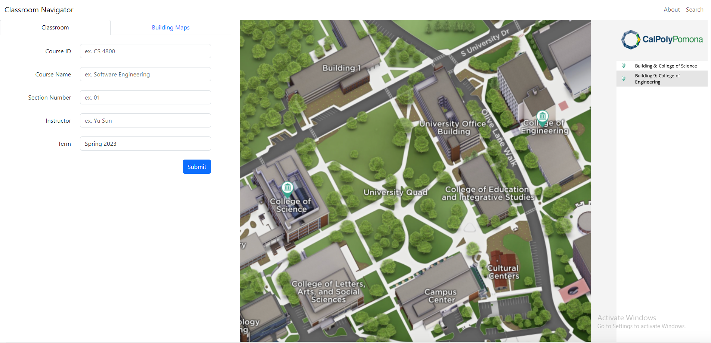
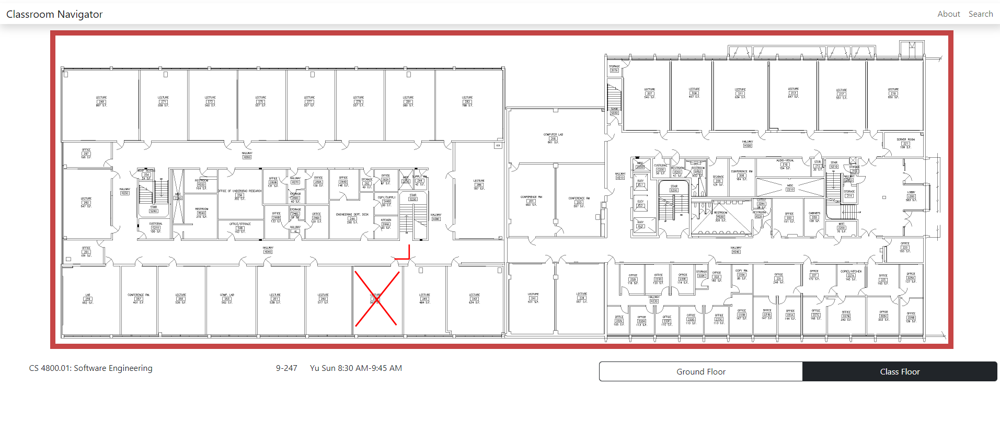
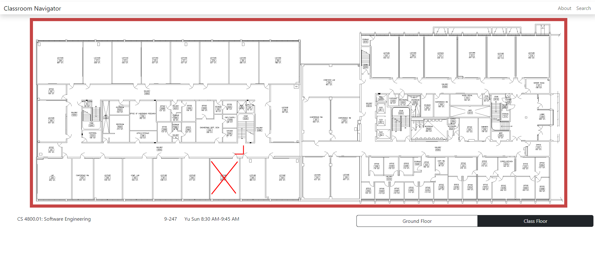

About Classroom Navigator
Have you ever gotten to school on time at the start of a new semester, found the building of your first class, and then spent 20 minutes walking in circles trying to find your classroom?
Room numbers in the buildings at Cal Poly Pomona can be confusing and unintuitive, making it difficult to find your class for the first time.
Classroom Navigator, or cppnavigator, is a tool we built to navigate the buildings and classrooms of Cal Poly Pomona. Our tool contains a search functionality to narrow down and find your exact class. Once your find your class, you can explore the floor plan of the building and get exact directions to your classroom.
How does it work?
We get class information for each semester from public search functions. If you've ever used Cal Poly Pomona's class search, you've probably found it to be incredibly slow and frustrating.
Luckily, we do all the class searching and processing for you. You can use our search tool to search for and get information about Cal Poly Pomona classes, even if you're not looking for directions. Our search tool is much faster, so you can search the Cal Poly Pomona class databse quickly and easily.
To display directions, we use floor plans of each building. Unfortunately, these floor plans are not publicly available. We were only able to get floor plans for Buildings 8 and 9 for now.
This means that our search tool covers all classes at Cal Poly Pomona, but our direction tool only works for classes in Buildings 8 and 9. Once we obtain floor plans for more buildings, this tool may be updated in the future.
Images
Here are a couple screenshots of our project:
 

Demo video
Here is a quick demonstration of our project:
Contact us
You can email me at jeremyembar@gmail.com or send me a message on Discord at water#8934.
[Back to top]